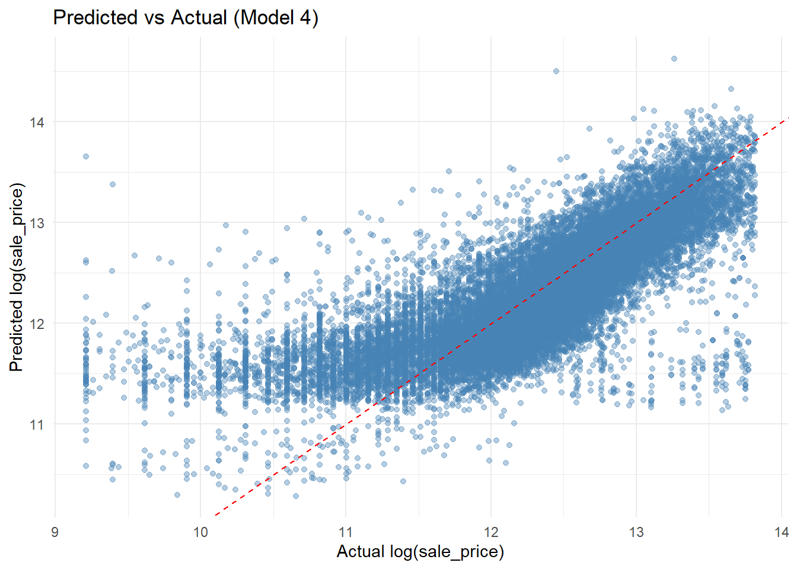

We filtered our property sales data to only show sales for the past two years to ensure up-to-date insights. We restricted the dataset to "SINGLE FAMILY" and "MULTI FAMILY" homes, excluding apartments and non-residential sales to ensure comparability, relevancy, and accuracy in our prediction models. Various apartments contained within the same building were found to be listed with a comprehensive sales price of the entire building which posed the threat of distorting our analysis. Observation values that were regarded as data entry errors or outliers were also removed. Properties with zero bathrooms, bedrooms, or livable area were removed as well as properties with a sales price below $10,000 and above $1,000,000.
Variable Selection and Variable Data Cleaning
We retained select structural attributes from our original dataset that we considered theoretically relevant to predicting sale price: number of bedrooms, number of bathrooms, total livable area, year the home was built, exterior condition, availability of garage spaces, and finally, the dependent variable, sale price.
Code for Property Sales Data Cleaning and Variable Selection
Code
#load necessary libraries library(sf)library(tigris)library(tidycensus)library(dplyr)library(stringr)library(ggplot2)library(tidyr)library(caret)library(knitr)library(scales)#load census key for later usecensus_api_key("42bf8a20a3df1def380f330cf7edad0dd5842ce6")#save data in url url <-"https://phl.carto.com/api/v2/sql?filename=opa_properties_public&format=geojson&skipfields=cartodb_id&q=SELECT+*+FROM+opa_properties_public"#suppress warnings for clarity and read data as spatial objectsuppressWarnings({ property_data <-st_read(url)})#clean dataparcel_data <- property_data%>%select(location, #load columns that could potentially be used as predictors category_code_description, #maybe garage_spaces and central air too? number_of_bedrooms, number_of_bathrooms, total_livable_area, year_built, exterior_condition, garage_spaces, sale_price, sale_date)%>%filter(category_code_description %in%c("SINGLE FAMILY","MULTI FAMILY"))%>%#no apartments, sales price of buildingdrop_na(number_of_bedrooms, #remove anomalies like houses with no rooms number_of_bathrooms, total_livable_area, sale_price, year_built) %>%filter(number_of_bedrooms>0, number_of_bathrooms>0, total_livable_area>0, sale_price>=10000, sale_price <=1000000)%>%#remove very low/high pricesmutate(sale_year =str_remove(sale_date, "-.*"))%>%filter(sale_year %in%c("2023","2024"))%>%#limit to only 2023 and 2024mutate(year_built =as.numeric(year_built))%>%mutate(Age =2025- year_built)%>%filter(Age <2000)%>%#create a age columnfilter(exterior_condition !=0) %>%#create exterior condition binary mutate(exterior_good =case_when( exterior_condition >=1& exterior_condition <=5~1, exterior_condition >=6& exterior_condition <=9~0,TRUE~NA_real_ ) )
Table 1. Property Dataset Dimensions Before and After Cleaning and Selecting Varaiables
Dataset
Rows
Columns
Raw Property Data
583824
79
Cleaned Parcel Data
25268
14
We derived our socioeconomic predictors from tract-level census data provided by the 2022 American Community Survey: median income, number with at least a bachelor’s degree, total number of those with at least a bachelor’s degree, number of those living in poverty, and total of those living in poverty. Census tracts with missing median income or zero reported as the median income were removed as it often indicated missing or zero values for other key predictors. We also mutated our census dataset to include two more columns, the percentage of people with bachelors and percentage of people in poverty, in order to standardize the observations across varying tract population sizes. Spatial data of the census tracts was also loaded in order to join our census variables to our parcel-level property data.
Code for Census Data Cleaning and Variable Selection
Code
#load data about poverty(counts and total), bachelors(counts and total), and income census_data <-get_acs(geography ="tract",state ="PA",county ="Philadelphia",variables =c(median_income ="B19013_001",num_with_bach ="B15003_022",bachelors_total ="B15003_001",num_in_poverty ="B17001_002",poverty_total ="B17001_001" ),year =2022,output ="wide")#create percentage columns for bachelors and poverty philly_census <- census_data%>%mutate(percentage_bach = num_with_bachE / bachelors_totalE,percentage_pov = num_in_povertyE / poverty_totalE )#remove data errors or incomplete fields philly_census <- philly_census%>%drop_na(median_incomeE)%>%filter(median_incomeE>0)#spatial census data philadelphia_tracts <-tracts(state ="PA",county ="Philadelphia",cb =TRUE,year =2022)#join census data and tract geometry to PARCEL dataparcel_data <- parcel_data %>%st_transform(st_crs(philadelphia_tracts))%>%st_join(philadelphia_tracts, join = st_within)%>%left_join(philly_census, by ="GEOID")
Table 2. Census Dataset Dimensions Before and After Cleaning and Selecting Varaiables
Dataset
Rows
Columns
Census Data
408
12
Cleaned Census Data
383
14
To further contextualize house prices, we loaded spatial datasets including the locations of colleges and universities, 2024 crime incidents, and Philadelphia neighborhood boundaries. These datasets were loaded with the intention of engineering spatial features such as proximity measurements and neighborhood stratification in order to account for spatial patterns and potential interactive spatial effects within our predictive model. Only the 2024 crime incidents needed to be cleaned due to the missing geometries that would prevent spatial analysis.
Code for Spatial Data Cleaning and Variable Selection
Code
#load university datauniversity_data <-st_read("./data/Universities_Colleges.geojson")#load 2024 crime incident dataorg_crime_data <-st_read("./data/incidents_part1_part2.shp")#removed crime incidents with no geometry crime_data <- org_crime_data %>%filter(!st_is_empty(geometry))#load neighborhood data neighborhoods <-st_read("./data/philadelphia-neighborhoods.shp")
Table 3. Spatial Datasets Dimensions Before and After Cleaning
Dataset
Rows
Columns
Crime Data
160388
14
Cleaned Crime Data
153644
14
Phase 2: Exploratory Data Analysis
Distribution of Sales Prices
We created a histogram to visualize the distribution of home sale prices in Philadelphia. The resulting graph revealed a positively skewed distribution, indicating that most properties were sold at lower price points, primarily between $150,000 and $350,000, while a small number of high-value homes sold for up to $1,000,000. As it pertains to our predictive model, this skewness suggests that a log-transformation of sale prices may be necessary to normalize the distribution of values and potentially improve model performance. It also indicates the need for diagnostic checks to determine the impact of outliers in order to ensure that the few high-priced homes do not distort our model estimates.
Geographic Distribution of Sales Price
We also explored the geographic distribution of sales prices across the neighborhoods in Philadelphia. We calculated the median sales price by each Philadelphia neighborhood. The map showed distinct spatial patterns with higher prices above $400,000, represented by lighter colors, being concentrated in neighborhoods such as Center City, University City, and parts of Northwest Philadelphia.
Phase 3: Feature Engineering (Technical Appendix)
Several geographic features were created. First, a crime buffer analysis was conducted by generating 600-foot buffers around each parcel. A k-nearest neighbor (kNN) distance measure was calculated between parcels and nearby universities. And a wealthy neighborhood classification was introduced by spatially joining parcels with neighborhood boundaries and identifying areas with a median sale price above $275,500 as “Wealthy.” This categorical factor was then used to construct an interaction term with living area.
Code
#set crs for distance calculationscrime_proj <-st_transform(crime_data, 3365)parcel_proj <-st_transform(parcel_data, 3365)university_proj <-st_transform(university_data, 3365)#proximity (within 600 feet) to violent crimeparcel_buffers<-st_buffer(parcel_proj, dist=600)violent_crimes <-c("Homicide - Criminal","Aggravated Assault No Firearm","Theft from Vehicle","Robbery Firearm","Aggravated Assault Firearm")violent_proj <- crime_proj %>%filter(text_gener %in% violent_crimes)violent_crime_counts <-st_intersects(parcel_buffers, violent_proj)violent_crime_counts <-lengths(violent_crime_counts)parcel_data$violent_crime_600ft <- violent_crime_counts
Code
#knn to university university_proj <-st_transform(university_data, 3365) #projection changed in order to calculate distance dist_matrix <-st_distance(parcel_proj, university_proj)get_knn_distance <-function(dist_matrix, k) {apply(dist_matrix, 1, function(distances) {mean(as.numeric(sort(distances)[1:k])) })}parcel_data$college_nn1 <-get_knn_distance(dist_matrix, k =1)parcel_data$college_nn3 <-get_knn_distance(dist_matrix, k =3)parcel_data$college_nn5 <-get_knn_distance(dist_matrix, k =5)#determine which nearest neighbor is correlated the most with sales price parcel_data %>%st_drop_geometry() %>%select(sale_price, college_nn1, college_nn3, college_nn5) %>%cor(use ="complete.obs") %>%as.data.frame() %>%select(sale_price)
Linear Regression
24442 samples
7 predictor
No pre-processing
Resampling: Cross-Validated (10 fold)
Summary of sample sizes: 21998, 21997, 21998, 21998, 21997, 21997, ...
Resampling results:
RMSE Rsquared MAE
0.6077956 0.3508108 0.4540641
Tuning parameter 'intercept' was held constant at a value of TRUE
Linear Regression
24442 samples
10 predictor
No pre-processing
Resampling: Cross-Validated (10 fold)
Summary of sample sizes: 21998, 21997, 21999, 21998, 21998, 21997, ...
Resampling results:
RMSE Rsquared MAE
0.4952052 0.5687667 0.3540447
Tuning parameter 'intercept' was held constant at a value of TRUE
Linear Regression
24442 samples
11 predictor
No pre-processing
Resampling: Cross-Validated (10 fold)
Summary of sample sizes: 21998, 21997, 21997, 21999, 21999, 21996, ...
Resampling results:
RMSE Rsquared MAE
0.489418 0.5790221 0.3483274
Tuning parameter 'intercept' was held constant at a value of TRUE
Linear Regression
24442 samples
12 predictor
No pre-processing
Resampling: Cross-Validated (10 fold)
Summary of sample sizes: 21998, 21998, 21997, 21997, 21997, 21998, ...
Resampling results:
RMSE Rsquared MAE
0.4824394 0.5907006 0.3414526
Tuning parameter 'intercept' was held constant at a value of TRUE
comparison table
## Model Performance Improves with Each Layer| Model | CV RMSE (log) | R² ||-------|---------------|-----|| Structural Only | 0.61 | 0.35 || + Census | 0.50 | 0.57 || + Spatial | 0.49 | 0.58 || + Interactions/FE | 0.48 | 0.59 |
Code
model_data_used <-model.frame(model4)model_data_used$Predicted <- model4$fitted.valuesggplot(model_data_used, aes(x = log_sale_price, y = Predicted)) +geom_point(alpha =0.4, color ="steelblue") +geom_abline(slope =1, intercept =0, color ="red", linetype ="dashed") +labs(title ="Predicted vs Actual (Model 4)",x ="Actual log(sale_price)",y ="Predicted log(sale_price)" ) +theme_minimal()

Phase 6: Model Diagnostics (Technical Appendix Only)
Intepretation:The residuals are spatially clustered: blue areas indicate underestimation (actual prices higher than predicted), while red areas indicate overestimation.This pattern suggests spatial dependence remains in the model, meaning location-specific effects are not fully captured.
Interpretation:Most points follow the 45° line, but deviations in the tails show that extreme residuals depart from normality. This indicates the model fits the majority of data well but may underfit high- and low-end price extremes.
Interpretation:Most observations have Cook’s distance near zero, meaning no influential outliers dominate the model.
Phase 7: Conclusions & Recommendations
Model Performance:The final model achieves an adjusted R² of 0.591, explaining nearly 59% of the variation in housing prices across Philadelphia. This represents a major improvement over the baseline Model 1 (R² = 0.35), demonstrating the importance of adding neighborhood and spatial characteristics to structural property features.
Most Significant Variables:Among all predictors, living area is the strongest driver of price, followed by the number of bathrooms and garage spaces, which add substantial functional value. Exterior condition, median income, and educational attainment also contribute positively, reflecting the combined effects of property quality and neighborhood socioeconomic context. In contrast, poverty rate and crime density show negative associations, while the interaction between living area and wealthy neighborhoods suggests that larger homes yield diminishing marginal returns in already high-value areas.
Equity Concern:The model’s predictive accuracy varies by location. It performs best in mid-range housing markets, while areas such as Nicetown, Fairhill, and Upper Kensington show higher residual errors. These disparities indicate that valuation patterns are still influenced by historical and spatial inequalities, raising potential equity concerns if such models were used in policy or taxation contexts.